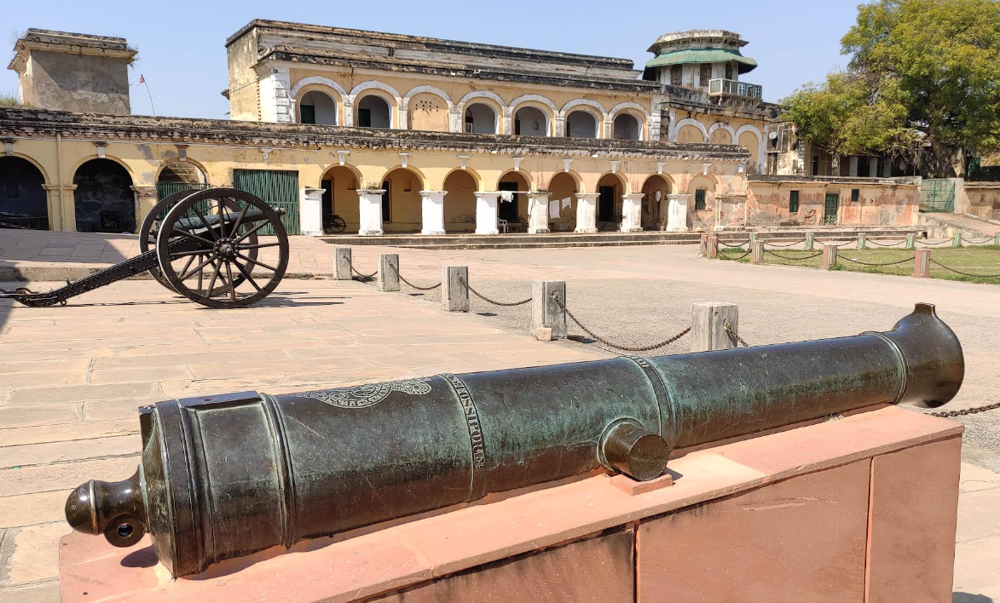
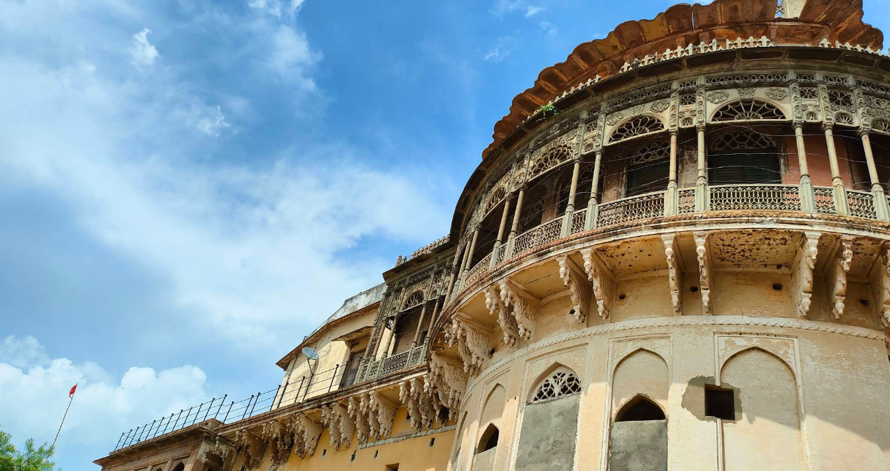
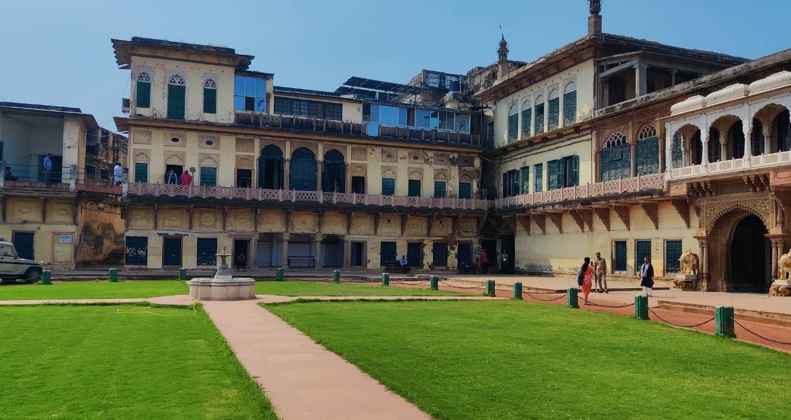
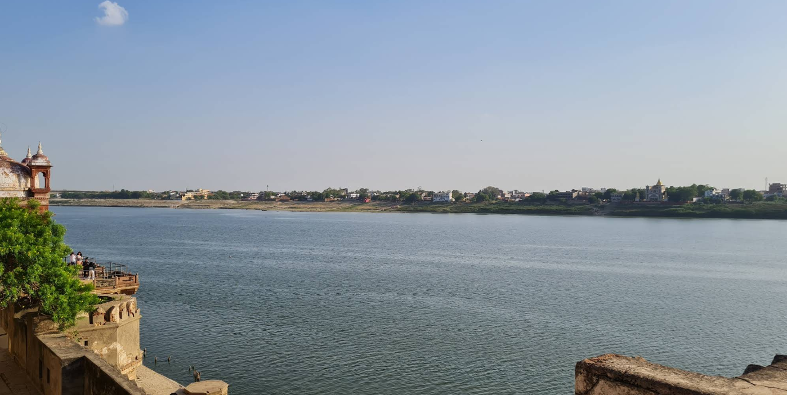
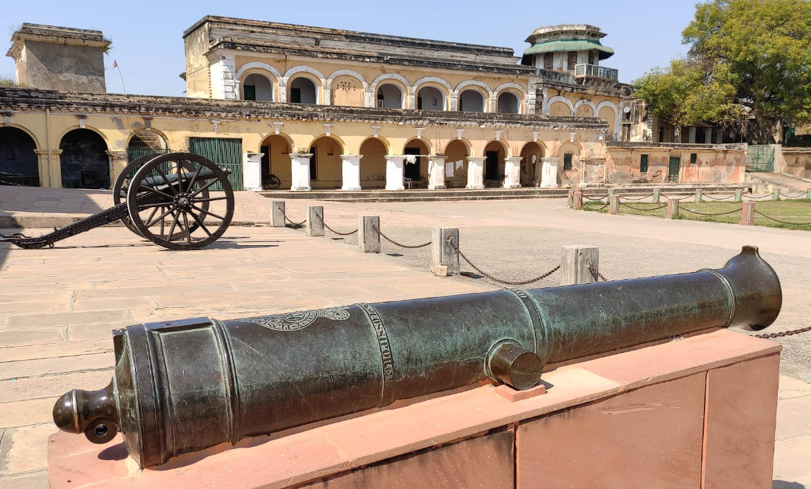
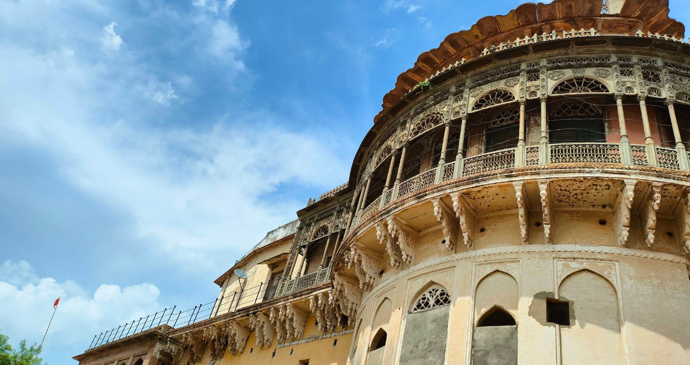
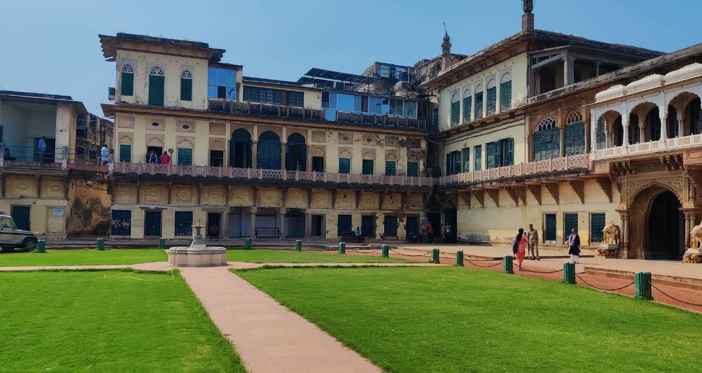
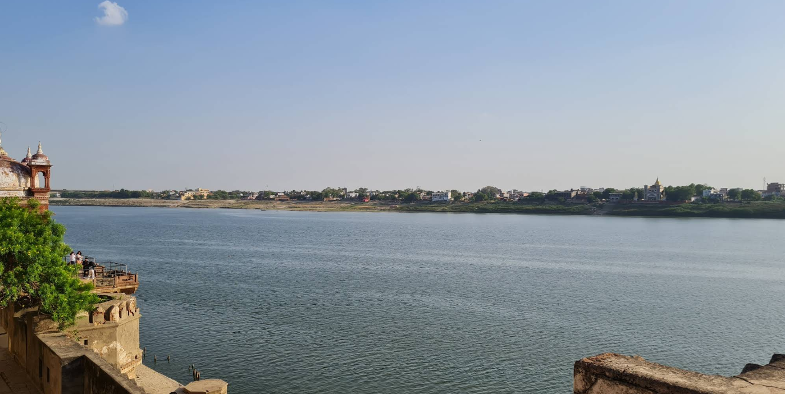

Ramnagar Fort
Historic Royal Fort on the Banks of River Ganga • Varanasi
Historic Royal Fort on the Banks of River Ganga • Varanasi
 







Ramnagar Fort is a grand sandstone structure built in the 18th century by Maharaja Balwant Singh, the ruler of the Banaras Kingdom. Located on the eastern bank of River Ganga, opposite Tulsi Ghat, the fort has been the royal residence of the Kashi Naresh for centuries.
Even today, it houses the current Maharaja, Anant Narayan Singh, preserving the legacy and traditions of Varanasi’s royal heritage.
Constructed around 1750 CE, the Ramnagar Fort symbolizes the power and prestige of the Banaras royal family. It was strategically located to overlook the sacred river, signifying the connection between the throne and divine traditions of Kashi.
The fort exhibits Mughal and Rajput architectural fusion. Built using creamy Chunar sandstone, it features carved balconies, arched courtyards, open terraces, and decorated pillars. The panoramic view of the Ganges and the ghats from the fort adds to its charm.
Inside the fort lies the famous Saraswati Bhawan Museum — showcasing antique weapons, vintage cars, palanquins, ivory works, manuscripts, royal costumes, and rare astronomical clocks.
The collection reflects the grandeur of Kashi’s kings and their patronage of art, science, and culture.
Ramnagar Fort is world-famous for its month-long Ramlila celebration organized by the royal family during Dussehra. This traditional play of the Ramayana, performed for over 200 years, attracts thousands of devotees and tourists.
Located in Ramnagar, about 14 km from Varanasi city center. Visitors can reach via road through Malviya Bridge or enjoy a scenic boat ride across the Ganga from Assi or Tulsi Ghat.